Craps Details¶
In the first section of this chapter, Craps Game Overview, we will present elements of the game of Craps. Craps is a stateful game, and we’ll describe the state changes in some detail.
We’ll look at the way dice work in Creating A Dice Frequency Distribution.
We will review some of the bets available on the Craps table in some depth in Available Bets. Craps offers some very obscure bets, and part of this obscurity stems from the opaque names for the various bets. Creating this wide variety of bets is an interesting programming exercise, and the first four exercise chapters will focus on this.
In Some Betting Strategies we will describe some common betting strategies that we will simulate. The betting strategies described in Roulette will be applied to Craps bets, forcing us to examine the Roulette solution for reuse opportunities.
We’ll also look at an alternative set of bets in Wrong Betting.
Craps Game Overview¶
Craps centers around a pair of six-sided dice. The 36 combinations form eleven numbers from 2 to 12; additionally, if the two die have equal values, this is called a “hardways,” because the number was made “the hard way”.
The table in the casino has a surface marked with spaces on which players can place bets. The names of the bets are opaque, and form an obscure jargon. There are several broad classification of bets, including the following:
those which follow the sequence of dice throws that make up a complete game,
the propositions based on only the next throw of the dice,
some “hardways” bets on rolling an equal pair before the game is revolved, and,
some unmarked bets.
These bets will be defined more completely, below, under Available Bets.
After the bets are placed, the dice are thrown by one of the players. This number resolves any one-roll bets into immediate winners or losers; it also determines the state change in the game, which may also resolve any game-based bets.
The first roll of the dice in a given game can be an immediate win or loss, or it can establish the point for the following rounds of this game. Subsequent rolls either make the point and win the game, roll a seven and lose the game, or the game continues. When the game is won, the winning player continues to shoot; a losing player passes the dice around the table to the next player.
Note that a game is of indefinite length. Less likely point values (4 and 10) will have longer games. More likely point values (6 and 8) will have shorter games.
In addition to the bets marked on the table, there are some additional bets. Some of these are called odds bets, or free odds bets, and pay off at odds that depend on the dice, not on the bet itself. An odds bet must be associated with a bet called a line bet, and are said to be “behind” the original bet; they can be called “behind the line” bets. The four line bets will be defined more fully, below.
Note
Casino Variation
There are slight variations in the bets available in different casinos. We’ll focus on a common subset of bets.
The dice form a frequency distribution with values from 2 to 12. An interesting preliminary exercise is to produce a table of this distribution with a small demonstration program. This frequency distribution is central to understanding the often cryptic rules for Craps. See Creating A Dice Frequency Distribution for a small application to develop this frequency distribution.
Game State Changes¶
The Craps game has two states: point off and point on. When a player begins a game, the point is off; the initial throw of the dice is called the “come out roll”. The number thrown on the dice determines the next state, and also the bets that win or lose. The rules are detailed in the following table.
Craps Game States
Roll |
Bet Resolution |
Next State |
|---|---|---|
2, 3, 12 |
“Craps”: Pass bets lose, Don’t Pass bets win. |
Point Off |
7, 11 |
“Winner”: Pass bets win, Don’t Pass bets lose. |
Point Off |
4, 5, 6, 8, 9, 10 |
Point on the number rolled, p. |
Roll |
Bet Resolution |
Next State |
|---|---|---|
2, 3, 12 |
Point still on p |
|
11 |
Point still on p |
|
7 |
“Loser”: all bets lose. The table is cleared. |
Point Off |
Point, p |
“Winner”: point is made, Pass bets win, Don’t Pass bets lose. |
Point Off |
Non-p number |
Come bets are activated on this new number |
Point still on p |
There is a symmetry to these rules. The most frequent number, 7, is either an immediate winner or an immediate loser. The next most frequent numbers are the six point numbers, 4, 5, 6, 8, 9, 10, which form three sets: 4 and 10 are high odds, 5 and 9 are middle odds, 6 and 8 are low odds. The relatively rare numbers (2, 3, 11 and 12) are handled specially on the first roll only, otherwise they are ignored. Because of the small distinction made between the craps numbers (2, 3 and 12), and 11, there is an obscure “C-E” bet to cover both craps and eleven.
Creating A Dice Frequency Distribution¶
Since Python is interpreted, you can enter the following directly in the interpreter and get the frequency of each number.
Dice Frequency I
from collections import defaultdict
freq = defaultdict(int)
for d1 in range(6):
for d2 in range(6):
n = d1 + d2 + 2
freq[n] += 1
print(freq)We’ve enumerate all 36 combinations of values (d1, d2). The sum
of these will be a value between 2 and 12. The list freq is a
dictionary that maps an integer sum of the dice to an integer count of the number
of occurrences of that sum.
This can also be done with a counter and a generator expression.
Dice Frequency II
from collections import Counter
freq = Counter((d1 + d2 + 2) for d1 in range(6) for d2 in range(6))
print(freq)
Here we’ve used a Counter. We’ve initialized the counter
using a generator expression that – similar to the previous example –
enumerates all 36 combinations of values (d1, d2).
The Counter class consumes all of the values from the generator expression.
The generate has two nested for clauses, (d1 + d2 + 2) for d1 in range(6) for d2 in range(6)
The Counter class automatically finds matching values and counts how many times the
duplicate values were seen.
Available Bets¶
There are four broad classification of bets:
those which follow the sequence of dice throws that make up a complete game,
those based on just the next throw of the dice (called proposition bets),
the hardways bets, and
the unmarked bets.
The game bets are also called line bets, can be supplemented with additional odds bets, placed behind the line bet. There are actually two sets of game bets based on the pass line and the come line.
The following illustration shows half of a typical craps table layout. On the left are the game bets. On the right (in the center of the table) are the single-roll propositions.

Craps Table Layout¶
Game Bets. The Game bets have two states. There is a set of bets allowed for the first roll, called the “come out” roll. If a point is established a number of additional bets become available. These are the pass line bets.
In addition to the basic pass line bets, there are also come line bets, which are similar to game bets.
Come Out Roll. When the point is off, the player will be making the come out roll, and only a subset of bets are available. Once the point is on, all bets are available.
The bets which are allowed on the come out roll are the Pass Line and Don’t Pass Line bets. These bets follow the action of the player’s game. There are several possible outcomes for these two bets.
Player throws craps (2, 3, or 12). A Pass Line bet loses. A Don’t Pass Line bet wins even money on 2 or 3; however, on 12, it returns the bet. This last case is called a “push” ; this rule is noted on the table by the “bar 12” legend in the Don’t Pass area.
Player throws 7 or 11. A Pass Line bet wins even money. A Don’t Pass Line bet loses.
Player throws a point number. The point is now on. A large white token, marked “on” is placed in one of the six numbered boxes to announce the point. The player can now place an additional odds bet behind the line. Placing a bet behind the Pass Line is called “buying odds on the point”. Placing a bet behind the Don’t Pass Line is called “laying odds against the point”.
Point Rolls. Once the point is on, there are three possible outcomes.
The player makes the point before rolling 7. A Pass Line bet wins even money. A Don’t Pass Line bet loses. The point determines the odds used to pay the behind the Pass Line odds bet.
The player throws 7 before making the point. A Pass Line bet loses. A Don’t Pass Line bet pays even money. The point determines the odds used to pay the behind the Don’t Pass Line odds bet.
The player throws a number other than 7 and the point: the game continues.
Come Line Bets. Once the point is on, the bets labeled “Come” and “Don’t Come” are allowed. These bets effectively form a game parallel to the main game, using a come point instead of the main game point. Instead of dropping the large “on” token in a numbered square on the layout, the house will move the individual Come and Don’t Come bets from their starting line into the numbered boxes (4, 5, 6, 8, 9, 10) to show which bets are placed on each point number. There are several possible outcomes for these two bets.
Player throws craps (2, 3, or 12). A Come Line bet loses. There are some additional special cases: a Don’t Come bet wins even money on 2 or 3; it is a push on 12. Established come point bets in the numbered squares remain.
Player throws 11. A Come Line bet wins even money. A Don’t Come bet loses. Established come point bets in the numbered squares remain.
Player throws a point number (4, 5, 6, 8, 9, or 10). Any come bets in that numbered box are winners – the come point was made – and the point determines the odds used to pay the behind the line odds. (Note that if this is the point for the main game, there will be no bets in the box, instead the large “on” token will be sitting there.) New bets are moved from the Come Line and Don’t Come Line to the numbered box, indicating that this bet is waiting on that point number to be made. Additional behind the line odds bets can now be placed. If the main game’s point was made, the “on” token will be removed (and flipped over to say “off”), and the next roll will be a come out roll for the main game. These bets (with the exception of the free odds behind a Come Line bet) are still working bets.
The player throws 7 before making the main point. A Come bet loses. A Don’t Come bet pays even money. The bets in the numbered boxes are all losers.
Propositions. There are also a number of one-roll propositions, including the individual numbers 2, 3, 7, 11, 12; also field (2, 3, 4, 9, 10, 11 or 12), any craps (2, 3 or 12), the horn (2, 3, 11 or 12), and a hop bet. These bets have no minimum, allowing a player to cover a number of them inexpensively.
Hardways. There are four hardways bets. These are bets that 4, 6, 8 or 10 will come up on two equal die (the hard way) before they come up on two unequal die (the easy way) or before a 7 is rolled. Hard 6, for example, is a bet that the pair (3,3) will be rolled before any of the other four combinations (1,5), (2,4), (5,1), (4,2) that total 6, or any of the 6 combinations that total 7. These bets can only be placed when the point is on, but they are neither single-roll propositions, nor are they tied to the game point.
Unmarked Bets. There are additional unmarked bets. One is to make a “place bet” on a number; these bets have a different set of odds than the odds bets behind a line bet. Other unmarked bets are to “buy” a number or “lay” a number, both of which involve paying a commission on the bet. Typically, only the six and eight are bought, and they can only be bought when they are not the point.
For programmers new to casino gambling, see Odds and Payouts for more information on odds payments for the various kinds of bets.
Not all of the Craps outcomes are equal probability. Some of the bets pay fixed odds, defined as part of the bet. Other bets pay odds that depend on the point established.
The basic Pass Line, Don’t Pass, Come Line and Don’t Come bets are even money bets. A $5 bet wins an additional $5.
The odds of winning a Pass Line bet is 49.3%. The  payout
presumes a 50% chance of winning. The gap between
actual odds and payout is the house edge.
payout
presumes a 50% chance of winning. The gap between
actual odds and payout is the house edge.
The points have distinct odds, as follows:
4 and 10 have odds of 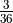 to win, 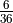 to lose, otherwise the game continues. This is a payout.
5 and 9 have odds of 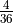 to win, leading to a 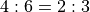 payout.
6 and 8 have odds of 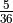 to win. this is a 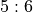 payout.
Each of these behind-the-line odds bets has a correct payout to match the actual odds of winning.
The combination of a Pass Line bet plus odds behind the line narrows the house edge. For example, a bet on the Pass Line has an expected return of -1.414%. If we place double odds behind the line with an expected return of 0, the net expected return for the combination is -0.471%.
The various proposition bets have odds stated on the table. Note that these rarely reflect the actual odds of winning. For example, a bet on 12 is a 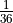 probability, but only pays as if it were 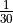.
There are ways to win a hard six or hard eight bet,
and 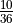. The remaining 25 outcomes are indeterminate.
While a hard 6 or hard 8 should pay  , the actual payment is
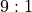. Similarly for a hard 4 or hard 10: they should pay
, the actual payment is
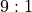. Similarly for a hard 4 or hard 10: they should pay  , the
actual payment is
, the
actual payment is  .
.
Some Betting Strategies¶
All of the Roulette betting strategies apply to Craps. However, the additional complication of Craps is the ability to have multiple working bets. The player can add bets during the game. The most important of these additional bets are the behind the line odds bets. Since these are paid at proper odds, they are the most desirable bets on the layout. The player, therefore, should place a line bet, followed by a behind the line odds bet.
The other commonly used additional bets are the Come bets. These increase the number of working bets. Since the additional odds bets for these pay proper odds, they are also highly desirable. A player can place a Come bet, followed by a behind the line odds bet on the specific number rolled.
Beyond this, the bets are less interesting. All of the proposition and hardways bets have odds that are incorrect. We can simulate these bets to discover the house edge built into the incorrect odds.
Some players will count the number of throws in game, and place a “7” bet if the game lasts more than six throws. This is a form of betting against oneself. When the player has a Pass Line bet that the game will be won, they’re diluted this with a 7 bet that the game will be lost. While the common rationale is that the second bet protects against a loss, it also reduces the potential win. We can simulate this kind of betting and examine the potential outcomes.
Wrong Betting¶
Craps has two forms of odds betting: “right” and “wrong”. The Pass Line and Come Line, as well as buying odds, are all “right”. The Don’t Pass, Don’t Come and Laying Odds are all “wrong”.
Right betting involves odds that provide a large reward for a
small wager. The odds on a Pass Line bet for the number 4 are
 : they player can win double the bet if the point is made.
The bet is to put 10 at risk to make 20.
: they player can win double the bet if the point is made.
The bet is to put 10 at risk to make 20.
Wrong betting involves odds that provide a small reward for a large wager. The odds on a Don’t Pass Line bet for the number 4 are described as “laid at 2:1”; the player will win half of what was bet if the point is missed. The player puts 20 at risk to make 10.
This distinction can be ignored by novice programmers. None of our simulated players are wrong bettors, since this involves putting a large amount at risk for a small payout, which violates a basic rule of gambling:
Never risk a lot to win a little.
Looking Forward¶
Now that we’ve considered the details of the craps game, we’ll need to look at the overall structure of the solution. It’s important to consider how the classes will interact with each other. Each class, in isolation, does very little. The aggregation of those classes will provide the required behavior.
The next chapter will propose an initial set of classes, and some revisions to classes we’ve already written.